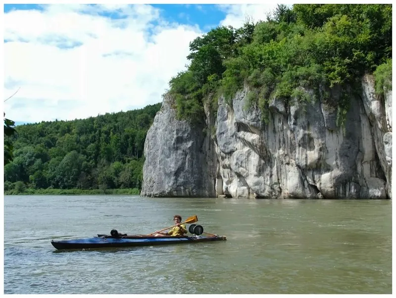
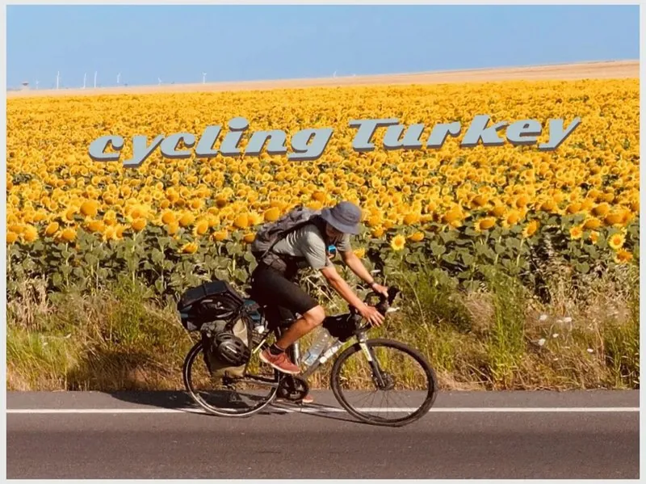
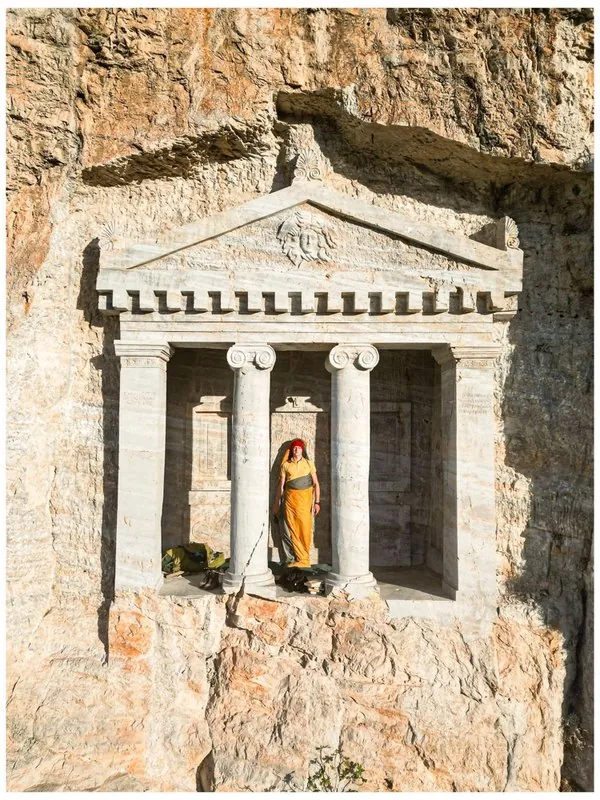
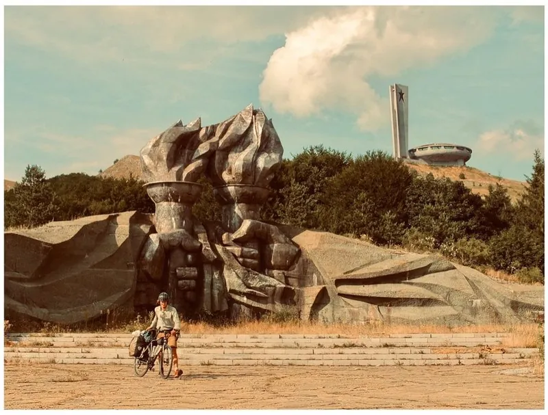
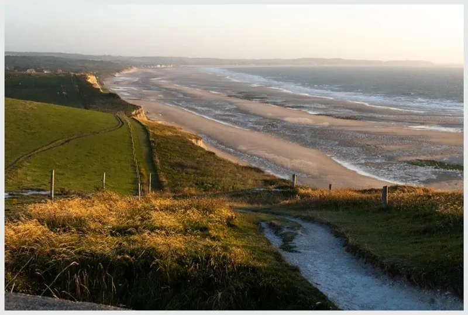
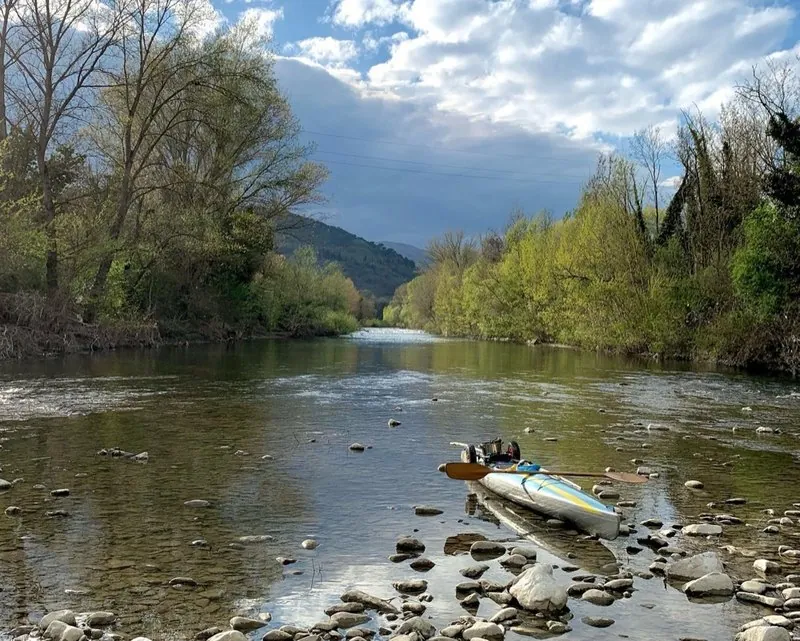
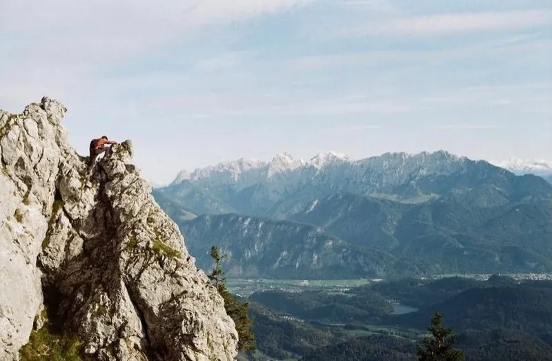
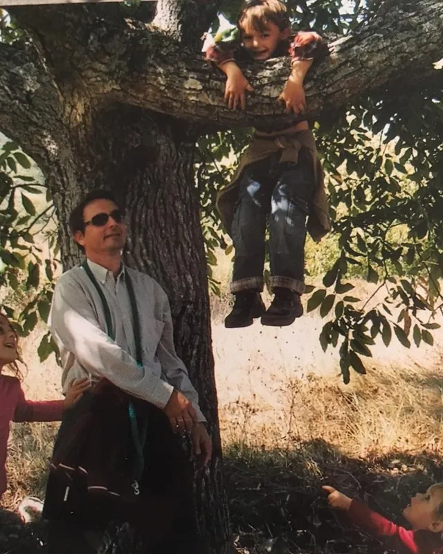

Archive
Journeys
Rivers, coastlines and roads done under my own power, and the buildings I stopped for along the way.

The Danube, source to sea
2025 · 88 photographs

Corsica by sea kayak
2025 · 55 photographs

Cycling Turkey and Greece
2025 · 24 photographs

Sightseeing Turkey and Greece
14 photographs

The Balkans by bike
2025 · 22 photographs

Normandy by bicycle
2025 · 12 photographs

Down the Tiber
2023 · 15 photographs

Egypt
2022 · 2 photographs

Alpine ascents
2 photographs

People, the dog, and a winter
56 photographs